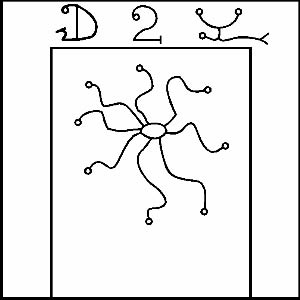

SHAMMASH’ın sayısı yirmidir ve işte onun mührü:

Marsın Tanrısı kudretli NERGAL.
İnsan başına ve aslan gövdesine sahiptir ve bir kılıç ile bir harman döveni taşır. Savaşın ve savaşın kaderinin Tanrısıdır. Bazen Kadimlerin ajanı olduğu düşünülmüştür, çünkü bir süreliğine CUTHA’da ikamet etmiştir. Rengi koyu kırmızıdır. Özü, Demir’de ve insanların ve hayvanların kanını dökmek için yapılan silahların hepsinde bulunur. Onun kapısı, takip eden ritüellerde Zones’u geçtiğinde göreceğin beşincidir. Işıkların Merdivenindeki Basamağı Kırmızı’dır.
Bu, onun Mars gökyüzünde yükseldiği zaman demir bir levhaya ya da kanlı bir kağıda oyman gereken mührüdür. En iyi şekilde gece ve insan ve hayvan yerleşimlerinden uzakta, görülemeyeceğin ve duyulamayacağın bir yerde yapılır. İlkin kalın kumaşa, daha sonra ipeğe sarılmalı ve ihtiyaç duyulacağı zamana kadar güvenli bir yerde saklanmalıdır. Ancak bu mührü acele ile kullanmamaya dikkat et, çünkü keskin bir kılıçtır.